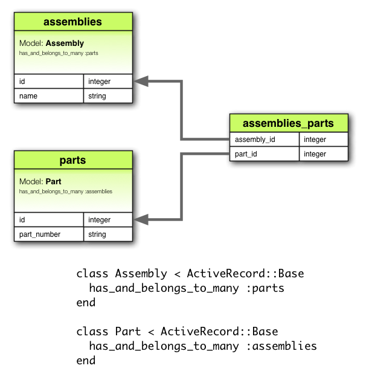
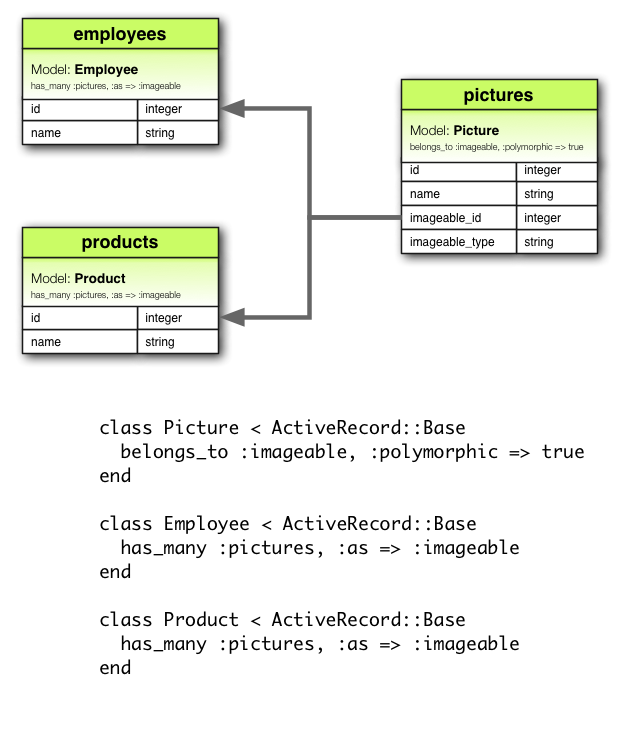

1 Associações, por quê?
Por que precisamos de associações entre models? Porque elas tornam mais fácil e mais simples operações comuns no código. Considere, por exemplo, uma simples aplicação Rails que inclui um model para clientes (Customer) e um model para encomendas (Order). Cada cliente pode ter muitas encomendas. Sem as associações, a declaração dos models seria parecida com isto:
class Customer < ActiveRecord::Base
end
class Order < ActiveRecord::Base
end
Agora, suponha que quiséssemos acrescentar uma nova encomenda a um cliente existente. Precisaríamos fazer algo parecido com isto:
@order = Order.create(:order_date => Time.now, :customer_id => @customer.id)
Ou quiséssemos apagar um cliente, e garantir que todas as suas encomendas fossem excluídas também:
@orders = Order.find_by_customer_id(@customer.id)
@orders.each do |order|
order.destroy
end
@customer.destroy
Com as associações do ActiveRecord, podemos simplificar estas — e outras — operações dizendo declarativamente ao Rails que existe uma conexão entre os dois models. Veja abaixo o código revisado para a declaração de clientes e encomendas:
class Customer < ActiveRecord::Base
has_many :orders, :dependent => :destroy
end
class Order < ActiveRecord::Base
belongs_to :customer
end
Com esta mudança, criar uma nova encomenda para um cliente é mais fácil:
@order = @customer.orders.create(:order_date => Time.now)
Remover um cliente e todas as suas encomendas é muito mais fácil:
@customer.destroy
Para saber mais sobre os diferentes tipos de associações, leia a próxima seção deste guia. Ela contém também alguns truques e dicas para trabalhar com as associações, e ao seu final se encontra uma referência completa para os métodos e opções para associações em Rails.
2 Os tipos de associações
Em Rails, uma associação é uma conexão entre os dois models do ActiveRecord. Associações são implementadas usando macros de chamadas, de modo que você pode adicionar declarativamente funcionalidades aos seus models. Por exemplo, declarando que um model belongs_to (pertence a) outro, você instrui o Rails a manter informações de Chave Primária – Chave Estrangeira entre instâncias dos dois models, além de receber alguns métodos úteis em seu model. O Rails suporta seis tipos de associação:
- belongs_to (pertence a)
- has_one (possui um)
- has_many (possui muitos)
- has_many :through (possui muitos através de)
- has_one :through (possui um através de)
- has_and_belongs_to_many (possui e pertence a muitos)
No restante deste guia, você aprenderá a declarar e utilizar as diversas formas de associações. Mas, primeiro, uma introdução rápida a situações em que cada tipo de associação é adequado.
2.1 A associação belongs_to
Uma associação belongs_to cria uma conexão um-para-um com outro model, de modo que cada instância do model “pertença a” (belongs_to) uma instância de um outro model. Por exemplo, se sua aplicação incluir clientes (Customer) e encomendas (Orders), e cada encomenda possa set atribuída a somente um cliente, você declararia o model desta forma:
class Order < ActiveRecord::Base
belongs_to :customer
end

2.2 A associação has_one
A associação has_one também configura uma conexão um-para-um com outro model, mas com uma semântica (e consequências) um pouco diferente. Esta associação indica que cada instância de um model contém ou possui uma instancia de outro model. Por exemplo, se cada fornecedor (Supplier) na sua aplicação possui somente uma conta (Account), você poderia declarar o model fornecedor desta forma:
class Supplier < ActiveRecord::Base
has_one :account
end

2.3 A associação has_many
Uma associação has_many indica uma conexão um-para-muitos com outro model. Você irá encontrar frequentemente esta associação do “outro lado” de uma associação belongs_to. Esta associação indica que cada instância do model possui zero ou mais instâncias do outro model. Por exemplo, em uma aplicação contendo clientes (Customer) e encomendas (Orders), o model cliente poderia ser declarado assim:
class Customer < ActiveRecord::Base
has_many :orders
end
O nome do outro model é pluralizado quando se está declarando uma associação has_many.

2.4 A Associação has_many :through
Uma associação has_many :through é frequentemente utilizada para criar um conexão muitos-para-muitos com outro model. Esta associação indica que o model pode possuir zero ou mais instâncias de outro model “através de” (trough) um terceiro model. Por exemplo, considere uma prática médica onde pacientes (Patient) podem marcar consultas (Appointment) com médicos (Physician). As declarações da associação seriam semelhantes a esta:
class Physician < ActiveRecord::Base
has_many :appointments
has_many :patients, :through => :appointments
end
class Appointment < ActiveRecord::Base
belongs_to :physician
belongs_to :patient
end
class Patient < ActiveRecord::Base
has_many :appointments
has_many :physicians, :through => :appointments
end

A associação has_many :through é também útil para a criação de “atalhos” através de associações has_many aninhadas. Por exemplo, se um documento tem várias seções, e uma seção possui vários parágrafos, você pode querer recuperar uma simples coleção de todos os parágrafos no documento. Você poderia declarar desta forma:
class Document < ActiveRecord::Base
has_many :sections
has_many :paragraphs, :through => :sections
end
class Section < ActiveRecord::Base
belongs_to :document
has_many :paragraphs
end
class Paragraph < ActiveRecord::Base
belongs_to :section
end
2.5 A associação has_one: through
Uma associação has_one :through cria uma conexão de um-para-um com outro model. Esta associação indica que um model pode estar associado uma instância de outro model através de um terceiro model. Por exemplo, se cada fornecedor (Supplier) possui uma conta (Account), e cada conta está associada a um histórico de conta (AccountHistory), então o model cliente poderia ser declarado desta forma:
class Supplier < ActiveRecord::Base
has_one :account
has_one :account_history, :through => :account
end
class Account < ActiveRecord::Base
belongs_to :supplier
has_one :account_history
end
class AccountHistory < ActiveRecord::Base
belongs_to :account
end

2.6 A associação has_and_belongs_to_many
Uma associação has_and_belongs_to_many cria uma conexão direta muitos-para-muitos com outro model, sem um outro model intervindo. Por exemplo, se a sua aplicação incluir peças (Parts) e conjuntos (Assemblies), onde cada conjunto inclui várias peças e que cada peça aparece em muitos conjuntos, você poderia declarar os models desta maneira:
class Assembly < ActiveRecord::Base
has_and_belongs_to_many :parts
end
class Part < ActiveRecord::Base
has_and_belongs_to_many :assemblies
end

2.7 Escolhendo entre belongs_to e has_one
Se você deseja criar uma relação 1-1 entre dois models, será necessário adicionar a um belongs_to e ao outro has_one. Como você sabe qual é qual?
A distinção está no lugar onde você colocou a chave estrangeira (ela fica na tabela da classe que foi declarada a associação belongs_to), mas você deveria refletir um pouco sobre o real significado dos dados. O relacionamento has_one diz que alguma coisa é sua – ou seja, que algo aponta para você. Por exemplo, faz mais sentido dizer que um fornecedor possui uma conta do que uma conta que possui um fornecedor. Isso sugere que o relacionamento correto é algo como este:
class Supplier < ActiveRecord::Base
has_one :account
end
class Account < ActiveRecord::Base
belongs_to :supplier
end
A migration correspondente seria assim:
class CreateSuppliers < ActiveRecord::Migration
def self.up
create_table :suppliers do |t|
t.string :name
t.timestamps
end
create_table :accounts do |t|
t.integer :supplier_id
t.string :account_number
t.timestamps
end
end
def self.down
drop_table :accounts
drop_table :suppliers
end
end
Usar t.integer :supplier_id faz a nomeação da chave estrangeira óbvia e explícita. Nas versões atuais do Rails, você pode abstrair a implementação deste detalhe usando t.references :supplier.
2.8 Escolhendo entre has_many :through e has_and_belongs_to_many
O Rails oferece duas maneiras diferentes para declarar um relacionamento muitos-para-muitos entre models. A maneira mais simples é usar has_and_belongs_to_many, que permite que você faça a associação diretamente:
class Assembly < ActiveRecord::Base
has_and_belongs_to_many :parts
end
class Part < ActiveRecord::Base
has_and_belongs_to_many :assemblies
end
A segunda forma de declarar um relacionamento muitos-para-muitos é usar has_many :through. Isto criará uma associação indireta, através de um model que realizará o join:
class Assembly < ActiveRecord::Base
has_many :manifests
has_many :parts, :through => :manifests
end
class Manifest < ActiveRecord::Base
belongs_to :assembly
belongs_to :part
end
class Part < ActiveRecord::Base
has_many :manifests
has_many :assemblies, :through => :manifests
end
A regra simples é que você deve criar um relacionamento has_many :through se você precisar trabalhar com o model de relacionamento como uma entidade independente. Se você não precisar fazer nada com o model de relacionamento, pode ser mais simples criar um relacionamento has_and_belongs_to_many (mas lembre-se que ainda assim você precisa criar as tabelas de joins).
Você deve usar has_many :through se você precisar de validações, callbacks, ou atributos extras no model de join.
2.9 Associações polimórficas
Um ponto mais avançado sobre associações são as associações polimórficas. Com associações polimórficas, um model pode pertencer a mais de um model, em uma única associação. Por exemplo, você pode ter um model foto que pertence a um model empregado ou a um model produto. Aqui está como isso pode ser declarado:
class Picture < ActiveRecord::Base
belongs_to :imageable, :polymorphic => true
end
class Employee < ActiveRecord::Base
has_many :pictures, :as => :imageable
end
class Product < ActiveRecord::Base
has_many :pictures, :as => :imageable
end
Você pode pensar em uma declaração belongs_to polimórfica como sendo uma interface que pode ser usada por qualquer outro model. A partir de uma instância do model Employee, você pode recuperar uma coleção de fotos: @employee.pictures.
Da mesma forma, você pode usar @product.pictures.
Se você tem uma instância do model Picture, você pode recuperar seu pai através de @picture.imageable. Para que isto funcione, você deve declarar uma coluna de chave estrangeira e uma coluna de tipo no model que declara a interface polimórfica:
class CreatePictures < ActiveRecord::Migration
def self.up
create_table :pictures do |t|
t.string :name
t.integer :imageable_id
t.string :imageable_type
t.timestamps
end
end
def self.down
drop_table :pictures
end
end
Esta migration pode ser simplificada utilizando a forma t.references:
class CreatePictures < ActiveRecord::Migration
def self.up
create_table :pictures do |t|
t.string :name
t.references :imageable, :polymorphic => true
t.timestamps
end
end
def self.down
drop_table :pictures
end
end

2.10 Auto-associações
Ao desenhar seu modelo de dados, às vezes você precisará de um model que terá uma relação consigo mesmo. Por exemplo, você pode querer armazenar todos os empregados em um único model no banco de dados, e pode querer poder rastrear relacionamentos entre gerentes e subordinados. Esta situação pode ser modelada utilizando auto-associações:
class Employee < ActiveRecord::Base
has_many :subordinates, :class_name => "Employee", :foreign_key => "manager_id"
belongs_to :manager, :class_name => "Employee"
end
Com essa configuração, você pode utilizar @employee.subordinates e @employee.manager.
3 Dicas, truques e avisos
Aqui estão algumas coisas que você deve saber para fazer um uso eficiente das associações do Active Record em suas aplicações Rails:
- Controlando caching
- Evitando colisões com nomes
- Atualizando o schema
- Controlando o escopo das associações
3.1 Controlando caching
Todos os métodos de associação são construídos em torno de um caching que mantém o resultado das queries recentes disponíveis para futuras operações. O cache é compartilhado até mesmo entre métodos. Por exemplo:
customer.orders # retorna todas as orders (encomendas) do banco de dados
customer.orders.size # usa a cópia no cache de orders
customer.orders.empty? # usa a cópia no cache de orders
Mas e se você quiser recarregar o cache, porque seus dados foram alterados em outra parte da aplicação? Apenas passe true para a chamada da associação:
customer.orders # retorna todas as orders (encomendas) do banco de dados
customer.orders.size # usa a cópia no cache de orders
customer.orders(true).empty? # desconsidera a cópia do cache e faz a busca no banco de dados novamente
3.2 Evitando colisões com nomes
Você não é livre para usar qualquer nome para suas associações. Como ao criar uma associação é criado um método com o nome da associação no model, é uma má idéia dar a associação um nome que já está sendo usado por um método de instância no ActiveRecord::Base . O método de associação iria sobrescrever o método inicial e quebrar as coisas. Então, attributes ou connection são nomes ruins para associações.
3.3 Atualizando o schema
Associações são extremamente úteis, mas não são mágicas. Você é responsável por manter seu esquema do banco de dados sincronizado com suas associações. Na prática, isto significa duas coisas, dependendo do tipo de associação que você está criando. Para associações belongs_to você precisará criar as chaves estrangeiras, e para associações has_and_belongs_to_many você deverá criar a tabela de junção.
3.3.1 Criando chaves estrangeiras para associações belongs_to
Quando você declara um associação belongs_to, você deve criar as chaves estrangeiras apropriadas. Por exemplo, considere este model:
class Order < ActiveRecord::Base
belongs_to :customer
end
Esta declaração deve ser feita em conjunto com a declaração da chave estrangeira na tabela orders:
class CreateOrders < ActiveRecord::Migration
def self.up
create_table :orders do |t|
t.datetime :order_date
t.string :order_number
t.integer :customer_id
end
end
def self.down
drop_table :orders
end
end
Se você criar uma associação depois de um tempo da criação do model, você deve lembrar-se de criar uma migration com um add_column para criar a chave estrangeira necessária.
3.3.2 Criando tabelas de junção para associações has_and_belongs_to_many
Se você criar uma associação has_and_belongs_to_many, você deverá explicitamente criar uma tabela de junção. A não ser que o nome da tabela de junção esteja explicitamente especificado na opção :join_table, o ActiveRecord cria o nome a partir da ordem alfabética dos nomes das classes. Então, uma junção entre os models customer e order irá criar o nome de junção padrão “customers_orders”, porque “c” vem antes de “o” na ordem alfabética.
A precedência entre nomes de models é calculada utilizando o operador < da classe String. Isto significa que se as strings são de tamanhos diferentes, e as strings são iguais quando comparadas com a menor parte, então a string maior é considerada de maior precedência na ordem alfabética. Por exemplo, você poderia pensar que as tabelas “paper_boxes” e “papers” gerariam uma tabela de junção chamada “papers_paper_boxes” por causa do tamanho do nome “paper_boxes”, mas na verdade o nome gerado será “paper_boxes_papers” (porque o sublinhado ‘_’ é alfabéticamente menor do que o ‘s’ nas codificações comuns).
Seja qual for o nome, você deve manualmente criar uma tabela de junção com uma migration apropriada. Por exemplo, considere esta associação:
class Assembly < ActiveRecord::Base
has_and_belongs_to_many :parts
end
class Part < ActiveRecord::Base
has_and_belongs_to_many :assemblies
end
Ela precisa de uma migration que crie a tabela assemblies_parts. Esta tabela deve ser criada sem uma chave primária:
class CreateAssemblyPartJoinTable < ActiveRecord::Migration
def self.up
create_table :assemblies_parts, :id => false do |t|
t.integer :assembly_id
t.integer :part_id
end
end
def self.down
drop_table :assemblies_parts
end
end
Nós passamos :id => false para create_table por que esta tabela não representa um model. Isto é obrigatório para a associação funcionar corretamente. Se você observar algum comportamento estranho em uma associação has_and_belongs_to_many como models faltando IDs, ou exceções sobre IDs conflitantes existem boas chances de você ter esquecido este detalhe.
3.4 Controlando o escopo das associações
Por padrão, associações procuram por objetos apenas no escopo do módulo atual. Isto pode ser importante quando você declara models Active Record dentro de um módulo. Por exemplo:
module MyApplication
module Business
class Supplier < ActiveRecord::Base
has_one :account
end
class Account < ActiveRecord::Base
belongs_to :supplier
end
end
end
Isto irá funcionar, porque tanto a classe Supplier quanto a classe Account estão definidas no mesmo escopo. Mas o código abaixo não funcionará, porque Supplier e Account estão definidos em escopos diferentes:
module MyApplication
module Business
class Supplier < ActiveRecord::Base
has_one :account
end
end
module Billing
class Account < ActiveRecord::Base
belongs_to :supplier
end
end
end
Para associar um model a outro model em um namespace diferente, você precisa especificar o nome completo da classe na declaração de sua associação:
module MyApplication
module Business
class Supplier < ActiveRecord::Base
has_one :account, :class_name => "MyApplication::Billing::Account"
end
end
module Billing
class Account < ActiveRecord::Base
belongs_to :supplier, :class_name => "MyApplication::Business::Supplier"
end
end
end
4 Referência Detalhada sobre Associações
As seções seguintes detalham cada tipo de associação, incluindo métodos que elas adicionam e as opções que você pode usar quando estiver declarando uma associação.
4.1 Referência da associação belongs_to
A associação belongs_to (pertence a) cria uma dependência de um-para-um com outro model. Em termos de banco de dados, esta associação diz que esta classe contém a chave estrangeira. Se a outra classe contiver a chave estrangeira, você deverá usar has_one ao invés de belongs_to.
4.1.1 Métodos adicionados pelo belongs_to
Quando você declara uma associação belongs_to, a classe declarada automaticamente ganha quatro métodos relacionados a associação:
- association(force_reload = false)
- association=(associate)
- build_association(attributes = {})
- create_association(attributes = {})
Em todos estes métodos, association é substituído pelo símbolo passado como primeiro argumento ao belongs_to. Por exemplo:
class Order < ActiveRecord::Base
belongs_to :customer
end
Cada instância do model order vai ter estes métodos:
customer
customer=
build_customer
create_customer
4.1.1.1 association(force_reload = false)
O método association returna o objeto associado, se existir. Se nenhum objeto associado for encontrado então, seu retorno será nil .
@customer = @order.customer
Se o objeto associado já tiver sido buscado no banco de dados para este objeto, o valor em cache será retornada. Para substituir esse comportamento (e forçar o banco de dados a reler), passe true no argumento force_reload .
4.1.1.2 association=(associate)+
O método association= atribui um objeto associado para este objeto. Nos bastidores, isto significa buscar a chave primária do objeto associado e definir a chave estrangeira deste objeto para o mesmo valor.
@order.customer = @customer
4.1.1.3 build_association(attributes = {})
O método build_association retorna um novo objeto do tipo associado. Este objeto será instanciado a partir dos atributos passados, a associação a este objeto através da chave estrangeira será definida, mas o objeto associado ainda não será salvo.
@customer = @order.build_customer(:customer_number => 123,
:customer_name => "John Doe")
4.1.1.4 create_association(attributes = {})
O método build_association retorna um novo objeto do tipo associado. Este objeto será instanciado a partir dos atributos passados, a associação a este objeto através da chave estrangeira será definida. Adicionalmente, o objeto associado será salvo (assumindo que passe pelas validações).
@customer = @order.create_customer(:customer_number => 123,
:customer_name => "John Doe")
4.1.2 Opções para belongs_to
Em muitas situações, você pode usar o comportamento padrão do belongs_to sem nenhuma customização. Mas apesar da ênfase do Rails em convenção sobre customização, você poder alterar este comportamento de várias formas. Esta sessão cobre as opções que você pode passar quando criar uma associação belongs_to. Por exemplo, uma associação com várias opções pode parecer com isto:
class Order < ActiveRecord::Base
belongs_to :customer, :counter_cache => true, :conditions => "active = 1"
end
A associação belongs_to suporta estas opções:
- :autosave
- :class_name
- :conditions
- :counter_cache
- :dependent
- :foreign_key
- :include
- :polymorphic
- :readonly
- :select
- :touch
- :validate
4.1.2.1 :autosave
Se você definir a opção :autosave como true, o Rails irá salvar quaisquer membros carregados e destruir membros que estejam marcados para serem destruídos sempre que você salvar o objeto que possui as associações.
4.1.2.2 :class_name
Se o nome do outro model não puder ser derivado do nome da associação, você pode usar a opção :class_name para informar o nome do model. Por exemplo, se uma “order” pertence a um “customer”, mas o nome atual do model que contém “customer” é Patron, você deve definir desta forma:
class Order < ActiveRecord::Base
belongs_to :customer, :class_name => "Patron"
end
4.1.2.3 :conditions
A opção :conditions permite que você especifique as condições que o objeto associado precisa cumprir (na sintaxe usada por uma cláusula SQL WHERE ).
class Order < ActiveRecord::Base
belongs_to :customer, :conditions => "active = 1"
end
4.1.2.4 :counter_cache
A opção :counter_cache pode ser usada para fazer a busca do número de objetos associados mais eficiente. Considere estes models:
class Order < ActiveRecord::Base
belongs_to :customer
end
class Customer < ActiveRecord::Base
has_many :orders
end
Com estas declarações, pedindo o valor @customer.orders.size requer uma chamada para o banco de dados para executar uma query COUNT(*) . Para evitar esta chamada, você pode adicionar um contador em cache ao model pertencente:
class Order < ActiveRecord::Base
belongs_to :customer, :counter_cache => true
end
class Customer < ActiveRecord::Base
has_many :orders
end
Com estas declarações, o Rails vai manter o valor no cache atualizado, e então retornar o valor como resposta ao método size .
Apesar da opção :counter_cache ser especificada no model que inclui a declaração belongs_to, uma coluna precisa ser adicionada ao model associado . No caso acima, você deveria adicionar uma coluna orders_count ao model Customer. Você pode sobrescrever o nome padrão da coluna se você precisar:
class Order < ActiveRecord::Base
belongs_to :customer, :counter_cache => :count_of_orders
end
class Customer < ActiveRecord::Base
has_many :orders
end
Colunas de contador em cache são adicionadas ao model que as contém como atributos somente leitura através de attr_readonly.
4.1.2.5 :dependent
Se você definir a opção :dependent para :destroy, então excluindo este objeto será chamado o método destroy no objeto associado para destruir o objeto. Se você definir a opção :dependent para :delete, então excluindo este objeto irá excluir o objeto associado sem chamar o método destroy.
Você não deve especificar esta opção em uma associação belong_to que esteja conectada com uma associação has_many na outra classe. Fazer isto pode resultar em registros orfãos em seu banco de dados.
4.1.2.6 :foreign_key
Por convenção, o Rails adivinha que a coluna que será usada para guardar a chave estrangeira neste model será o nome da associação com o sufixo _id. A opção :foreign_key permite que você defina o nome da chave estrangeira diretamente:
class Order < ActiveRecord::Base
belongs_to :customer, :class_name => "Patron", :foreign_key => "patron_id"
end
Em nenhum caso o Rails irá criar as colunas de chave estrangeira para você. Você precisa explicitamente definí-las como parte de suas migrations.
4.1.2.7 :include
Você pode usar a opção :include para especificar as associações de segunda ordem que devem ser pré-carregadas quando esta associação for utilizada. Por exemplo:
class LineItem < ActiveRecord::Base
belongs_to :order
end
class Order < ActiveRecord::Base
belongs_to :customer
has_many :line_items
end
class Customer < ActiveRecord::Base
has_many :orders
end
Se você frequentemente recupera customers diretamente de line items (@line_item.order.customer), então você pode fazer seu código um pouco mais eficiente incluindo customers na associação de line items para orders:
class LineItem < ActiveRecord::Base
belongs_to :order, :include => :customer
end
class Order < ActiveRecord::Base
belongs_to :customer
has_many :line_items
end
class Customer < ActiveRecord::Base
has_many :orders
end
Não há necessidade de usar :include para associações imediatas – isto significa que, se você tiver Order belongs_to :customer, então customer é pré-carregado automaticamente quando for necessário.
4.1.2.8 :polymorphic
Passando true para a opção :polymorphic indica que esta será uma associação polimórfica. Associações polimórficas foram discutidas em detalhes anteriormente neste guia.
4.1.2.9 :readonly
Se você definir a opção :readonly para true, então o objeto associado terá acesso somente leitura quando for retornado pela associação.
4.1.2.10 :select
A opção :select permite que você sobrescreva a cláusula SQL SELECT que é usada para retornar dados sobre o objeto associado. Por padrão, o Rails retorna todas as colunas.
Se você definir a opção :select em uma associação belongs_to , você também deve definir a opção foreign_key para garantir resultados corretos.
4.1.2.11 :touch
Se você definir a opção :touch para :true, então o timestamp updated_at ou updated_on do objeto associado será definido pelo pelo horário atual quando este objeto for salvo ou destruído:
class Order < ActiveRecord::Base
belongs_to :customer, :touch => true
end
class Customer < ActiveRecord::Base
has_many :orders
end
Neste caso, salvando ou excluindo uma comprar (order) irá atualizar o timestamp do cliente (customer) associado. Você também pode especificar um atributo de timestamp particular para a atualização:
class Order < ActiveRecord::Base
belongs_to :customer, :touch => :orders_updated_at
end
4.1.2.12 :validate
Se você definir a opção :validate para true, então os objetos associados serão validados sempre que você salvar este objeto. Por padrão, esta opção é false: objetos associados não serão validados quando este objeto for gravado.
4.1.3 Como saber se existe um objeto associado?
Para saber se existe um objeto associado, simplesmente verifique a associação com association.nil?:
if @order.customer.nil?
@msg = "No customer found for this order"
end
4.1.4 Quando objetos são gravados?
Atribuir um objeto a uma associação belongs_to não o grava automaticamente. Também não grava o objeto associado.
4.2 Referência da associação has_one
A associação has_one cria uma relação um-para-um com outro model. Em termos de banco de dados, esta associação diz que a outra classe terá a chave estrangeira. Se esta classe possuir a chave estrangeira, então você deve usar um belongs_to.
4.2.1 Métodos Adicionados pelo has_one
Quando você declara a associação has_one, a classe declarante automaticamente ganha quatro métodos relacionados a associação:
- association(force_reload = false)
- association=(associate)
- build_association(attributes = {})
- create_association(attributes = {})
Em todos estes métodos, association é substituído pelo símbolo passado como o primeiro argumento do método has_one . Por exemplo, na declaração abaixo:
class Supplier < ActiveRecord::Base
has_one :account
end
Cada instância do model Supplier irá conter os seguintes métodos:
account
account=
build_account
create_account
4.2.1.1 association(force_reload = false)
O método association retorna o objeto associado, se houver algum. Se nenhum objeto associado for encontrado, retornará nil.
@account = @supplier.account
Se o objeto associado já tiver sido buscado do banco de dados para este objeto (@supplier), a versão cacheada será retornada. Para sobrescrever este comportamento ( e forçar a leitura no banco de dados), passe true para o argumento force_reload .
4.2.1.2 association=(associate)
O método association= atribui um objeto associado a este objeto. Por trás dos panos, isto significa extrair a chave primária do objeto e definir a chave estrangeira do objeto associado ao mesmo valor.
@suppler.account = @account
4.2.1.3 build_association(attributes = {})
O método build_association retorna um novo objeto do tipo associado. Este objeto será instanciado a partir do atributos passados, e será associado através de sua chave estrangeira, mas o objeto associado não será gravado ainda.
@account = @supplier.build_account(:terms => "Net 30")
4.2.1.4 create_association(attributes = {})
O método create_association retorna um novo objeto do tipo associado. Este objeto será instanciado a partir do atributos passados, e será associado através de sua chave estrangeira. Adicionalmente, o objeto associado será gravado ( assumindo que ele passe por todas as validações).
@account = @supplier.create_account({:terms => "Net 30"})
4.2.2 Opções para has_one
Em várias situações, você pode usar o comportamento padrão do has_one sem nenhuma customização. Apesar da ênfase do Rails em convenção sobre customização, você pode alterar este comportamento de várias formas. Esta seção cobre as opções que você pode passar quando criar um associação has_one. Por exemplo, uma associação com várias opções pode parecer com isto:
class Supplier < ActiveRecord::Base
has_one :account, :class_name => "Billing", :dependent => :nullify
end
A associação has_one suporta essas opções:
- :as
- :autosave
- :class_name
- :conditions
- :dependent
- :foreign_key
- :include
- :order
- :primary_key
- :readonly
- :select
- :source
- :source_type
- :through
- :validate
4.2.2.1 :as
Definindo a opção :as indica que esta será uma associação polimórfica. Associações polimórficas foram discutidas em detalhes anteriormente neste guia.
4.2.2.2 :autosave
Se você definir a opção :autosave para true, o Rails irá salvar qualquer membro carregado e destruir os membros que estiverem marcados para serem destruídos quando salvar o objeto paí.
4.2.2.3 :class_name
Se o nome do outro model não puder ser adivinhado a partir do nome da associação, você pode usar a opção :class_name para fornecer o nome do model. Por exemplo, se fornecedor (supplier) possui uma conta (account), mas o nome do model atual que contém as contas (accounts) é Billing, você precisará definí-los assim:
class Supplier < ActiveRecord::Base
has_one :account, :class_name => "Billing"
end
4.2.2.4 :conditions
A opção :conditions permite que você especifique as condições que o objeto associado deve satisfazer (a sintaxe é usada por uma cláusula SQL WHERE).
class Supplier < ActiveRecord::Base
has_one :account, :conditions => "confirmed = 1"
end
4.2.2.5 :dependent
Se você definir a opção :dependent para :destroy, ao apagar este objeto irá chamar o método destroy no objeto associado para apagá-lo também. Se você definir a opção :dependent para :delete, então apagando este objeto irá excluir o objeto associado sem chamar o método destroy. Se você definir a opção :dependent to :nullify, ao excluir este objeto irá definir a chave estrangeira do objeto associado para NULL.
4.2.2.6 :foreign_key
Por convenção, o Rails adivinha que a coluna usada para guardar a chave estrangeira no outro model é o nome do model com o sufixo _id adicionado. A opção :foreign_key permite que você defina o nome da chave estrangeira diretamente:
class Supplier < ActiveRecord::Base
has_one :account, :foreign_key => "supp_id"
end
O Rails nunca irá criar a coluna da chave estrangeira para você. Você precisa defini-la explicitamente como parte de suas migrations.
4.2.2.7 :include
Você pode usar a opção :include para especificar uma associação de segunda ordem que deve ser pré carregada quando a associação for utilizada. Por exemplo, considere os models abaixo:
class Supplier < ActiveRecord::Base
has_one :account
end
class Account < ActiveRecord::Base
belongs_to :supplier
belongs_to :representative
end
class Representative < ActiveRecord::Base
has_many :accounts
end
Se você freqüentemente buscar representantes (representatives) a partir de fornecedores (suppliers, ex.: @supplier.account.representative), então você pode tornar seu código mais eficiente incluindo representantes (representatives) na associação de fornecedores (suppliers) para contas (accounts):
class Supplier < ActiveRecord::Base
has_one :account, :include => :representative
end
class Account < ActiveRecord::Base
belongs_to :supplier
belongs_to :representative
end
class Representative < ActiveRecord::Base
has_many :accounts
end
4.2.2.8 :order
A opção :order dita a ordem em que os objetos associados deverão ser retornados (em uma sintaxe usada por uma cláusula SQL ORDER BY). Como a associação has_one vai retornar apenas um objeto, esta opção não deve ser necessária.
4.2.2.9 :primary_key
Por convenção, o Rails adivinha que a coluna que irá armazenar a chave primária será id. Você pode sobrescrever isto e especificar a chave primária com a opção :primary_key .
4.2.2.10 :readonly
Se você definir a opção :readonly para true, o objeto associado será exclusivamente para leitura quando for retornado pela associação.
4.2.2.11 :select
A opção :select permite que você altere a cláusula SQL SELECT que é usada para retornar os atributos do objeto associado. Por padrão, o Rails retorna todas as colunas.
4.2.2.12 :source
A opção :source específica o nome da fonte para uma associação has_one :through .
4.2.2.13 :source_type
A opção :source_type específica o tipo da fonte para uma associação has_one :through em uma associação polimórfica.
4.2.2.14 :through
A opção :through específica um model para a junção para executar a query. Associações has_one :through já foram discutidas em detalhes.
4.2.2.15 :validate
Se você definir a opção :validate para true, os objetos associados serão validados sempre que você salvar este objeto. Por padrão, ele é false: objetos associados não serão validados quando este objeto for salvo.
4.2.3 Como saber se existe um objeto associado?
Para saber se existe um objeto associado, simplesmente cheque association.nil?:
if @supplier.account.nil?
@msg = "No account found for this supplier"
end
4.2.4 Quando objetos são salvos?
Quando você atribuir um objeto a uma associação has_one, este objeto é automaticamente salvo (para atualizar a chave estrangeira). Além disso, qualquer objeto que estiver sendo substituído também é salvo automaticamente, porque sua chave estrangeira também será alterada.
Se qualquer uma dessas gravações falhar devido a erros de validação, então a atribuição retornará false e a própria atribuição é cancelada.
Se o objeto pai (o que estiver declarando a associação has_one) não estiver salvo (isto é, new_record? retorna true) então os objeto filhos não serão salvos. Eles serão automaticamente salvos quando o pai for.
Se você quiser atribuir um objeto para uma associação has_one sem salvar o objeto, use o método association.build .
4.3 Referência da associação has_many
A associação has_many cria uma relação um-para-muitos com outro model. Em termos de banco de dados, esta associação diz que a outra classe terá a chave estrangeira que referência instâncias desta classe.
4.3.1 Métodos adicionados
Quando você declara uma associação has_many, a classe declarante irá receber automaticamente 13 métodos relacionados a associação:
- collection(force_reload = false)
- collection<<(object, …)
- collection.delete(object, …)
- collection=objects
- collection_singular_ids
- collection_singular_ids=ids
- collection.clear
- collection.empty?
- collection.size
- collection.find(…)
- collection.exist?(…)
- collection.build(attributes = {}, …)
- collection.create(attributes = {})
Em todos estes métodos, collection> é substituído pelo símbolo passado como primeiro argumento em has_many, e collection_singular é substituído pela versão no singular deste símbolo. Por exemplo, veja abaixo:
class Customer < ActiveRecord::Base
has_many :orders
end
Cada instância do model customer terá os seguintes métodos:
orders(force_reload = false)
orders<<(object, ...)
orders.delete(object, ...)
orders=objects
order_ids
order_ids=ids
orders.clear
orders.empty?
orders.size
orders.find(...)
orders.exist?(...)
orders.build(attributes = {}, ...)
orders.create(attributes = {})
4.3.1.1 collection(force_reload = false)
O método collection retorna um array com todos os objetos associados. Se não existir objeto associado, ele retorna um array vazio.
@orders = @customer.orders
4.3.1.2 collection<<(object, …)
O método collection<< adiciona um ou mais objetos para a coleção, definindo suas chaves estrangeiras para a chave primária do model que o chamou.
@customer.orders << @order1
4.3.1.3 collection.delete(object, …)
O método collection.delete remove um ou mais objetos da coleção definindo suas chaves estrangeiras para NULL.
@customer.orders.delete(@order1)
Os objetos associados serão destruídos, se existir :dependent => :destroy, e excluídos se estiverem associados com :dependent => :delete_all.
4.3.1.4 collection=objects
O método collection= faz com que a coleção contenha apenas os objetos passados, adicionando ou removendo apropriadamente.
4.3.1.5 collection_singular_ids
O método collection_singular_ids retorna um array com os ids dos objetos da coleção.
@order_ids = @customer.order_ids
4.3.1.6 collection_singular_ids=ids
O método collection_singular_ids= faz com que a coleção contenha apenas os objetos identificados pelas chaves primárias passadas, adicionando e apagando apropriadamente.
4.3.1.7 collection.clear
O método collection.clear remove todos os objetos da coleção. Isto destrói os objetos associados se estiverem associados com a opção :dependent => :destroy, ou apagando-os direto do banco de dados caso seja definido :dependent => :delete_all, e em outros casos suas chaves estrangeiras serão definidas para NULL.
4.3.1.8 collection.empty?
O método collection.empty? retorna true se a coleção não contiver nenhum objeto associado.
<% if @customer.orders.empty? %>
No Orders Found
<% end %>
4.3.1.9 collection.size
O método collection.size retorna o número de objetos na coleção.
@order_count = @customer.orders.size
4.3.1.10 collection.find(…)
O método collection.find encontra objetos na coleção. Ele utiliza a mesma sintaxe e opções do ActiveRecord::Base.find.
@open_orders = @customer.orders.find(:all, :conditions => "open = 1")
4.3.1.11 collection.exist?(…)
O método collection.exist? verifica se existe o objeto associado que corresponda a condição passada como argumento. Ele utiliza a mesma sintaxe e opções do ActiveRecord::Base.exists?.
4.3.1.12 collection.build(attributes = {}, …)
O método collection.build retorna um ou mais novos objetos do tipo associado. Estes objetos são instanciados a partir dos atributos passados, e associados através da chave estrangeira que será criada, mas os objetos associados ainda não serão salvos.
@order = @customer.orders.build({:order_date => Time.now, :order_number => "A12345"})
4.3.1.13 collection.create(attributes = {})
O método collection.create retorna um novo objeto do tipo associado. Estes objetos são instanciados a partir dos atributos passados, e associados através da chave estrangeira que será criada, e os objetos associados serão salvos (assumindo que passem nas validações).
@order = @customer.orders.create({:order_date => Time.now, :order_number => "A12345"})
4.3.2 Options for has_many
Em várias situações, você pode usar as opções padrão para o has_many sem nenhuma customização. Mas você pode alterar este comportamento de várias maneiras. Esta seção cobre as opções que você pode passar quando cria uma associação has_many . Por exemplo, uma associação com várias opções pode se parecer como isto:
class Customer < ActiveRecord::Base
has_many :orders, :dependent => :delete_all, :validate => :false
end
A associação has_many suporta estas opções:
- :as
- :autosave
- :class_name
- :conditions
- :counter_sql
- :dependent
- :extend
- :finder_sql
- :foreign_key
- :group
- :include
- :limit
- :offset
- :order
- :primary_key
- :readonly
- :select
- :source
- :source_type
- :through
- :uniq
- :validate
4.3.2.1 :as
Definindo a opção :as indica que essa será uma associação polimórfica. Associações polimórficas foram discutidas em detalhes anteriormente neste guia.
4.3.2.2 :autosave
Se você definir a opção :autosave para true, o Rails irá salvar qualquer membro carregado e destruir os membros que estiverem marcados para serem destruídos quando salvar o objeto paí.
4.3.2.3 :class_name
Se o nome do outro model não puder ser descoberto pelo nome da associação, você pode usar :class_name para provêr o nome do model. Por exemplo, se um cliente (customer) possui muitos pedidos (orders), mas o nome atual do model que contém pedidos é Transaction, você pode definir as coisas desta forma:
class Customer < ActiveRecord::Base
has_many :orders, :class_name => "Transaction"
end
4.3.2.4 :conditions
A opção :conditions permite que se especifique as condições que a associação precisa atender (na sintaxe usada por uma cláusula SQL WHERE).
class Customer < ActiveRecord::Base
has_many :confirmed_orders, :class_name => "Order", :conditions => "confirmed = 1"
end
Você também pode passar condições como um hash:
class Customer < ActiveRecord::Base
has_many :confirmed_orders, :class_name => "Order", :conditions => { :confirmed => true }
end
Se você usar :conditions no estilo hash, então a criação do registro através desta associação terá automaticamente o escopo usando o hash. Neste caso, usando @customer.confirmed_orders.create ou @customer.confirmed_orders.build vai criar pedidos que tenham a coluna confirmed igual a true.
Se você precisar avaliar condições dinamicamente em runtime, você pode usar inteporlação de strings em aspas simples:
class Customer < ActiveRecord::Base
has_many :latest_orders, :class_name => "Order",
:conditions => 'orders.created_at > #{10.hours.ago.to_s(:db).inspect}'
end
Certifique-se de estar usando aspas simples.
4.3.2.5 :counter_sql
Normalmente o Rails gera automaticamente o SQL apropriado para contar os membros de uma associação. Com a opção :counter_sql, você pode especificar o comando SQL para fazer o “count” da sua forma.
Se você especificar :finder_sql mas não definir :counter_sql, então o SQL para contador será gerado substituindo SELECT COUNT(*) FROM para a cláusula SELECT ... FROM da sua declaração do :finder_sql.
4.3.2.6 :dependent
Se você definir a opção :dependent para :destroy, apagando este objeto irá chamar o método destroy de cada objeto associado para apagá-lo. Se você definir :dependent para :delete_all, então apagar este objeto irá excluir os objetos associados sem chamar o método destroy
Esta opção é ignorada quando você utiliza a opção :through na associação.
4.3.2.7 :extend
A opção :extend especifica o nome de um módulo para extender o proxy de associação. Extensão de associações serão discutidas com mais detalhes neste guia.
4.3.2.8 :finder_sql
Normalmente o Rails gera automaticamente o SQL apropriado para buscar os membros da associação. Com a opção :finder_sql, você pode especificar a cláusula SQL para buscá-los. Se a busca dos membros associados necessitar de um SQL complexo envolvendo várias tabelas, esta opção pode ser útil.
4.3.2.9 :foreign_key
Por convenção, o Rails descobre que a coluna usada para armazenar a chave estrangeira em outro model é o nome deste model com o sufixo _id adicionado. A opção :foreign_key permite que você defina o nome da chave estrangeira diretamente.
class Customer < ActiveRecord::Base
has_many :orders, :foreign_key => "cust_id"
end
O Rails nunca vai gerar as colunas para a chave estrangeira automaticamente para você. Você precisa definí-las explicitamente em suas migrations.
4.3.2.10 :group
A opção :group passa o nome de um atributo que será usado para agrupar o resultado, usando uma cláusula GROUP BY no SQL.
class Customer < ActiveRecord::Base
has_many :line_items, :through => :orders, :group => "orders.id"
end
4.3.2.11 :include
Você pode usar a opção :include para especificar associações de segunda ordem que devem ser pré-carregadas quando a associação for usada. Por exemplo, considere os models abaixo:
class Customer < ActiveRecord::Base
has_many :orders
end
class Order < ActiveRecord::Base
belongs_to :customer
has_many :line_items
end
class LineItem < ActiveRecord::Base
belongs_to :order
end
Se você freqüentemente retorna line items diretamente de customers (@customer.orders.line_items), então você pode tornar seu código um pouco mais eficiente incluindo line item na associação de customers para orders:
class Customer < ActiveRecord::Base
has_many :orders, :include => :line_items
end
class Order < ActiveRecord::Base
belongs_to :customer
has_many :line_items
end
class LineItem < ActiveRecord::Base
belongs_to :order
end
4.3.2.12 :limit
A opção :limit permite se restringir o total de objetos que serão buscados através da associação.
class Customer < ActiveRecord::Base
has_many :recent_orders, :class_name => "Order", :order => "order_date DESC", :limit => 100
end
4.3.2.13 :offset
A opção :offset permite que você especifique de onde a busca dos objetos associados deve iniciar. Por exemplo, se você definir :offset => 11, irá ignorar os 11 primeiros registros.
4.3.2.14 :order
A opção :order dita a ordem que cada objeto associado deve ser retornado ( gerando uma cláusula SQL ORDER BY).
class Customer < ActiveRecord::Base
has_many :orders, :order => "date_confirmed DESC"
end
4.3.2.15 :primary_key
Por convenção, o Rails descobre que a coluna que armazenará a chave primária desta associação é id. Você pode sobrescrever isso e especificar a chave primária com a opção :primary_key.
4.3.2.16 :readonly
Se você definir a opção :readonly para true, os objetos associados serão somente leitura (read-only) quando forem retornados através da associação.
4.3.2.17 :select
A opção :select permite que você sobrescreva a cláusula SQL SELECT que será usada para retornar os objetos associados. Por padrão, o Rails retorna todas as colunas.
Se você especificar seu próprio :select, não se esqueça de incluir a chave primária e chave estrangeira do model associado. Se você não o fizer, o Rails irá disparar um erro.
4.3.2.18 :source
A opção :source especifica o nome de origem da associação para uma associação has_many :through. Você só precisa usar esta opção se o nome da associação não puder se inferida automaticamente a partir do nome da associação.
4.3.2.19 :source_type
A opção :source_type especifica o tipo da associação de origem para uma associação has_many :through que ocorra através de uma associação polimórfica.
4.3.2.20 :through
A opção :through especifica um model para uma junção. Associações has_many :through criam uma forma de implementar uma associação many-to-many (muitos para muitos), como discutido anteriormente neste guia .
4.3.2.21 :uniq
A opção :uniq => true remove os registros duplicados de uma coleção retornada. É mais útil em conjunto com a opção :through.
4.3.2.22 :validate
Se você definir a opção :validate para false, então os objetos associados não serão validados quando você salvar este objeto. Por padrão, este valor é true: objetos associados serão validados quando o objeto for salvo.
4.3.3 Quando os objetos são salvos?
Quando você atribui um objeto a uma associação has_many, este objeto é automaticamente salvo (para atualizar sua chave estrangeira). Se você atribuir múltiplos objetos em uma única declaração, então todos são salvos.
Se alguma dessas gravações falhar por erros de validação, então a declaração de atribuição retornará false e a atribuição será cancelada.
Se o objeto pai (o que estiver declarando a associação has_many) não estiver salvo (ou seja, new_record? retorna true) então os objetos filhos não são salvos quando são adicionados. Todos os membros não salvos de uma associação serão automaticamente salvos quando o pai for salvo.
Se você quiser atribuir um objeto a uma associação has_many sem salvar o objeto, use o método collection.build.
4.4 Referência da associação has_and_belongs_to_many
A associação has_and_belongs_to_many cria um relacionamento muitos-para-muitos com outro model. Em termos de banco de dados, ela associa duas classes através de uma tabela intermediária que inclui as chaves estrangeiras de cada classe.
4.4.1 Métodos adicionados
Quando você declara uma associação has_and_belongs_to_many, a classe declarante ganha 13 métodos relacionados a associação:
- collection(force_reload = false)
- collection<<(object, …)
- collection.delete(object, …)
- collection=objects
- collection_singular_ids
- collection_singular_ids=ids
- collection.clear
- collection.empty?
- collection.size
- collection.find(…)
- collection.exist?(…)
- collection.build(attributes = {})
- collection.create(attributes = {})
Em todos estes métodos, collection é substituído pelo símbolo passado como primeiro argumento do has_and_belongs_to_many, e collection_singular é substituído pela versão no singular do símbolo. Por exemplo, a declaração abaixo:
class Part < ActiveRecord::Base
has_and_belongs_to_many :assemblies
end
Cada instância do model terá os seguintes métodos:
assemblies(force_reload = false)
assemblies<<(object, ...)
assemblies.delete(object, ...)
assemblies=objects
assembly_ids
assembly_ids=ids
assemblies.clear
assemblies.empty?
assemblies.size
assemblies.find(...)
assemblies.exist?(...)
assemblies.build(attributes = {}, ...)
assemblies.create(attributes = {})
4.4.1.1 Métodos para colunas adicionais
Se a tabela de junção de uma associação has_and_belongs_to_many possui colunas adicionais além das duas chaves estrangeiras, estas colunas serão adicionadas como atributos nos registros retornados pela associação. Registros retornados com atributos adicionais serão sempre somente leitura, porque o Rails não pode salvar alterações nestes atributos.
O uso de atributos extra em uma tabela de junção em uma associação has_and_belongs_to_many foi depreciado. Se você precisa deste tipo de comportamento complexo em uma tabela que une dois models em uma relação muitos para muitos, você deve usar uma associação has_many :through ao invés de has_and_belongs_to_many.
4.4.1.2 collection(force_reload = false)
O método collection retorna um array com todos os objetos associados. Se não existir objetos associados, retorna um array vazio.
@assemblies = @part.assemblies
4.4.1.3 collection<<(object, …)
O método collection<< adiciona um ou mais objetos a uma coleção criando registros na tabela de junção.
@part.assemblies << @assembly1
Este método possui os alias collection.concat e collection.push.
4.4.1.4 collection.delete(object, …)
O método collection.delete remove um ou mais objetos da coleção apagando registros da tabela de junção. Ele não destrói os objetos.
@part.assemblies.delete(@assembly1)
4.4.1.5 collection=objects
O método collection= faz com que a coleção contenha apenas os objetos passados, adicionando e excluindo apropriadamente.
4.4.1.6 collection_singular_ids
O método _collection\_singular_\_ids retorna um array com os ids dos objetos na coleção.
@assembly_ids = @part.assembly_ids
4.4.1.7 collection_singular_ids=ids
O método collection_singular_ids= faz com que a coleção contenha apenas os objetos identificados pelas chaves primárias passadas, inserindo e excluindo apropriadamente.
4.4.1.8 collection.clear
O método collection.clear remove cada objeto da coleção através da exclusão das linhas na tabela de junção. Isso não destrói os objetos associados.
4.4.1.9 collection.empty?
O método collection.empty? retorna true se a coleção não contém nenhum objeto associado.
<% if @part.assemblies.empty? %>
This part is not used in any assemblies
<% end %>
4.4.1.10 collection.size
A método collection.size retorna o número de objetos na coleção.
@assembly_count = @part.assemblies.size
4.4.1.11 collection.find(…)
O método collection.find encontra objetos dentro da coleção. Ele utiliza a mesma sintaxe e opções do ActiveRecord::Base.find. Acrescenta também a condição adicional de que o objeto deve estar na coleção.
@new_assemblies = @part.assemblies.find(:all, :conditions => ["created_at > ?", 2.days.ago])
4.4.1.12 collection.exist?(…)
O método collection.exist? checa se algum objeto atende as condições na coleção. Utiliza a mesma sintaxe e opções do ActiveRecord::Base.exists?.
4.4.1.13 collection.build(attributes = {})
O método collection.build retorna um novo objeto do tipo associado. Este objeto será instanciado a partir dos atributos passados, e uma associação será criada através da tabela de junção, mas o objeto associado não será salvo.
@assembly = @part.assemblies.build({:assembly_name => "Transmission housing"})
4.4.1.14 collection.create(attributes = {})
O método collection.create retorna um novo objeto do tipo associado. Este objeto será instanciado a partir dos atributos passados, e uma associação será criada através da tabela de junção, e o objeto associado será salvo (contando que passe por todas as validações).
@assembly = @part.assemblies.create({:assembly_name => "Transmission housing"})
4.4.2 Opções para has_and_belongs_to_many
Em muitas situações, você pode usar o comportamento padrão para has_and_belongs_to_many sem nenhuma customização. Mas você pode alterar este comportamento de várias formas. Esta seção cobre as opções que você pode passar ao criar uma associação has_and_belongs_to_many. Por exemplo, uma associação com várias opções pode se parecer com isso:
class Parts < ActiveRecord::Base
has_and_belongs_to_many :assemblies, :uniq => true, :read_only => true
end
Associação has_and_belongs_to_many suporta essas opções:
- :association_foreign_key
- :autosave
- :class_name
- :conditions
- :counter_sql
- :delete_sql
- :extend
- :finder_sql
- :foreign_key
- :group
- :include
- :insert_sql
- :join_table
- :limit
- :offset
- :order
- :readonly
- :select
- :uniq
- :validate
4.4.2.1 :association_foreign_key
Por convenção, o Rails adivinha que a coluna na tabela de junção usada para armazenar as chaves estrangeiras apontando para outros models é o nome do model com o sufixo _id . A opção :association_foreign_key permite que você defina o nome da chave estrangeira diretamente:
As opções :foreign_key e :association_foreign_key são úteis quando você estiver definindo uma relação muitos-para-muitos em uma auto-associação. Por exemplo:
class User < ActiveRecord::Base
has_and_belongs_to_many :friends, :class_name => "User",
:foreign_key => "this_user_id", :association_foreign_key => "other_user_id"
end
4.4.2.2 :autosave
Se você definir a opção :autosave para true, o Rails irá salvar qualquer membro carregado e destruir os membros que estiverem marcados para serem destruídos quando salvar o objeto paí.
4.4.2.3 :class_name
Se o nome do outro model não puder ser derivado a partir do nome da associação, você pode usar a opção :class_name para passar o nome do model. Por exemplo, se parts contém assemblies, mas o nome do model que contém os assemblies é Gadget, você deve fazer algo como abaixo:
class Parts < ActiveRecord::Base
has_and_belongs_to_many :assemblies, :class_name => "Gadget"
end
4.4.2.4 :conditions
A opção :conditions permite especificar a condição que o objeto associado deve atender (na sintaxe usada por uma cláusula SQL WHERE).
class Parts < ActiveRecord::Base
has_and_belongs_to_many :assemblies, :conditions => "factory = 'Seattle'"
end
Você também pode definir condições através de um hash:
class Parts < ActiveRecord::Base
has_and_belongs_to_many :assemblies, :conditions => { :factory => 'Seattle' }
end
Se você utilizar :conditions no estilo hash, então a criação dos registros pela associação será automaticamente escopada usando o hash. Neste casa, usando @parts.assemblies.create ou @parts.assemblies.build irá criar registros onde a coluna de criação conterá o valor “Seattle”.
4.4.2.5 :counter_sql
Normalmente o Rails gera automaticamente o SQL apropriado para contar os membros da associação. Com a opção :counter_sql, você pode especificar o SQL para fazer a contagem.
Se você especificar :finder_sql mas não :counter_sql, o SQL contador será gerado substituindo SELECT COUNT(*) FROM para a cláusula SELECT ... FROM para a declaração do seu :finder_sql.
4.4.2.6 :delete_sql
Normalmente o Rails gera automaticamente o SQL apropriado para remover as ligações entre as classes associadas. Com a opção :delete_sql, você pode especificar uma cláusula SQL para exclusão.
4.4.2.7 :extend
A opção :extend especifica um módulo para estender o proxy de associação. Extensão de associações serão discutidas com mais detalhes neste guia.
4.4.2.8 :finder_sql
Normalmente Rails gera automaticamente o SQL apropriado para buscar os membros da associação. Com a opção :finder_sql, você pode especificar sua própria cláusula SQL para buscar os registros. Se a busca dos objetos requer um SQL complexo em um hierarquia de múltiplas tabelas, então esta opção pode ser necessária.
4.4.2.9 :foreign_key
Por convenção, o Rails adivinha que a coluna na tabela de junção que será usada para armazenar a chave estrangeira será o nome do model mais o sufixo _id. A opção :foreign_key permite que você especifique o nome da chave estrangeira diretamente:
class User < ActiveRecord::Base
has_and_belongs_to_many :friends, :class_name => "User",
:foreign_key => "this_user_id", :association_foreign_key => "other_user_id"
end
4.4.2.10 :group
A opção :group informa o nome de um atributo que será usado para agrupar os resultados, usando uma cláusula GROUP BY em um SQL.
class Parts < ActiveRecord::Base
has_and_belongs_to_many :assemblies, :group => "factory"
end
4.4.2.11 :include
Você pode usar a opção :include para especificar uma associação de segunda ordem que deve ser pré-carregada quando a associação for utilizada.
4.4.2.12 :insert_sql
Normalmente o Rails gera automaticamente o SQL apropriado para criar a associação entre as classes. Com a opção :insert_sql, você pode especificar um comando SQL para inserir os registros da sua forma.
4.4.2.13 :join_table
Se o nome padrão da tabela de junção, baseada em ordem alfabética, não é o que você deseja, então é possível usar a opção :join_table para sobrescrever este comportamento.
4.4.2.14 :limit
A opção :limit permite a você restringir o número total de objeto que serão buscados através da associação.
class Parts < ActiveRecord::Base
has_and_belongs_to_many :assemblies, :order => "created_at DESC",
:limit => 50
end
4.4.2.15 :offset
A opção :offset permite que você especifique de onde a busca dos objetos associados deve iniciar. Por exemplo, se você definir :offset => 11, irá ignorar os 11 primeiros registros.
4.4.2.16 :order
A opção :order dita a ordem que cada objeto associado deve ser retornado (gerando uma cláusula SQL ORDER BY).
class Parts < ActiveRecord::Base
has_and_belongs_to_many :assemblies, :order => "assembly_name ASC"
end
4.4.2.17 :readonly
Se você definir a opção :readonly para true, os objetos associados serão somente leitura quando forem retornados através da associação.
4.4.2.18 :select
A opção :select permite que você sobrescreva a cláusula SQL SELECT que será usada para retornar os objetos associados. Por padrão, o Rails retorna todas as colunas.
4.4.2.19 :uniq
Especificar a opção :uniq => true remove duplicatas da coleção.
4.4.2.20 :validate
Quando você define a opção :validate para false, os objetos associados não serão validados quando você salvar este objeto. Por padrão, esta opção recebe true+: objetos associados também serão validados quando o objeto for salvo.
4.4.3 Quando os Objetos são Salvos?
Quando você atribuir um objeto a uma associação has_and_belongs_to_many, este objeto é automaticamente salvo (para atualizar a tabela de junção). Se você atribuir múltiplos objetos em uma declaração, então todos são salvos.
Se uma das gravações falhar durante o processo de validações, então a atribuição retornará false e a atribuição em si será cancelada.
Se o objeto pai (o que estiver declarando a associação has_and_belongs_to_many) não estiver salvo (ou seja, new_record? retorna true) então os filhos também não serão salvos quando forem adicionados. Todos os membros não salvos na associação serão automaticamente salvos quando o pai for salvo.
Se você quiser atribuir um objeto a uma associação has_and_belongs_to_many sem salvar o objeto, use o método collection.build.
4.5 Association Callbacks
Callbacks normais são atrelados ao ciclo de vida de objetos Active Record, permitindo que você trabalhe com estes objetos em vários pontos. Por exemplo, você pode usar o callback :before_save para fazer com que algo aconteça antes do objeto ser salvo.
Callbacks de associação são similares a callbacks normais, mas eles são acionados por eventos no ciclo de vida da coleção. Existem quatro callbacks de associação disponíveis:
- before_add
- after_add
- before_remove
- after_remove
Você define callbacks de associação adicionando opções na declaração da associação. Por exemplo:
class Customer < ActiveRecord::Base
has_many :orders, :before_add => :check_credit_limit
def check_credit_limit(order)
...
end
end
O Rails passa o objeto a ser adicionado ou removido para o callback.
Você pode empilhar callbacks em um único evento passando-os como array:
class Customer < ActiveRecord::Base
has_many :orders, :before_add => [:check_credit_limit, :calculate_shipping_charges]
def check_credit_limit(order)
...
end
def calculate_shipping_charges(order)
...
end
end
Se before_add disparar uma exceção, o objeto não será adicionado a coleção. Similarmente, se o callback before_remove disparar uma exceção, o objeto não será removido da coleção.
4.6 Extensões de associação
Você não está limitado as funcionalidades que o Rails automaticamente constrói nos objetos de um proxy de associação. Você pode extender estes objetos através de módulos anônimos, adicionando novos finders, creators ou outros métodos. Por exemplo:
class Customer < ActiveRecord::Base
has_many :orders do
def find_by_order_prefix(order_number)
find_by_region_id(order_number[0..2])
end
end
end
Se você tiver uma extensão que deve ser compartilhada por várias associações, então você pode usar um módulo nomeado. Por exemplo:
module FindRecentExtension
def find_recent
find(:all, :conditions => ["created_at > ?", 5.days.ago])
end
end
class Customer < ActiveRecord::Base
has_many :orders, :extend => FindRecentExtension
end
class Supplier < ActiveRecord::Base
has_many :deliveries, :extend => FindRecentExtension
end
Para incluir mais de um módulo de extensão em uma única associação, basta especificar um array de modulos:
class Customer < ActiveRecord::Base
has_many :orders, :extend => [FindRecentExtension, FindActiveExtension]
end
Extensões podem referenciar o proxy de associação através de três acessadores:
- proxy_owner retorna o objeto que a associação faz parte.
- proxy_reflection retorna o objeto de reflexão que descreve a associação.
- proxy_target retorna o objeto associado para belongs_to ou has_one, ou a coleção de objetos associados para has_many ou has_and_belongs_to_many.
5 Changelog
- Abril 20, 2009: Traduzido a opção :touch por Daniel Lopes
- Abril 19, 2009: Adicionado opção :touch para associação belongs_to por Mike Gunderloy
- Março 13, 2009: Revisão da tradução por Fabio Kreusch
- February 28, 2009: Atualização da tradução com a opção :autosave Daniel Lopes
- Fevereiro 1, 2009: Adicionado a opção :autosave Mike Gunderloy
- Janeiro 18, 2009: Primeira versão da tradução para português por Daniel Lopes
- Setembro 28, 2008: Corrigido o diagrama has_many :through, adicionado o diagrama para associações polimórficas, por Mike Gunderloy. First release version.
- Setembro 22, 2008: Adicionado diagramas, coisas diversas. por Mike Gunderloy (not yet approved for publication)
- Setembro 14, 2008: Versão inicial por Mike Gunderloy (not yet approved for publication)